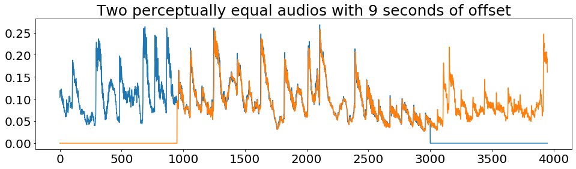
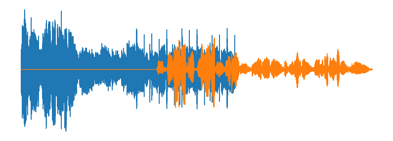
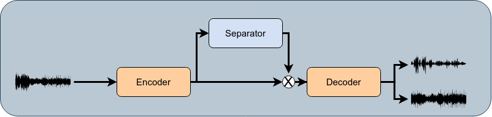
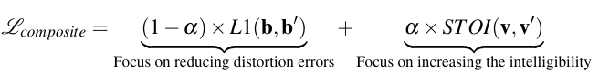
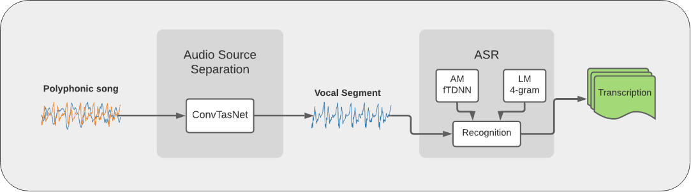

Automatic Lyrics Transcription from Single Audio Channel Homophonic Music Recordings
Gerardo Roa Dabike
Presentation Outline
Overview of the project
Stage 1
Stage 2
Plan next 18 months
Overview of the project
The Task
To recognise sung speech from an accompaniment singing.
Overview of the project
Aims
To automatically recognise the sung speech from a homophonic single-channel audio recording,
by adapting robust systems for typical speech and taking advantages of the musical prosody
information of both the background accompaniment and the sung speech.
Overview of the project
Breaking down the task
The project was split into three components or stages.
Unaccompanied singing recognition.
Audio source separation and singer enhancement.
Jointly optimise the singer enhancement with the acoustic model
Overview of the project
Research Questions - Stage 1
Using state-of-the-art ASR systems for spoken speech, is it possible to construct a robust and fair DNN ASR baseline system for an unaccompanied singing scenario?
Given a baseline system for an unaccompanied singing scenario, can the performance of the system be improved by incorporating musically motivated features?
Overview of the project
Research Questions - Stage 2
Given that suitable training databases are small by modern ASR standards. How can a singing enhancement DNN approach be trained to obtain a high-quality singing segment suitable for ASR task?
Can musically motivated features to be used to increase the performance of the DNN singer enhancement model?
Can the singing enhancement model be extended also to recover the background accompaniment?
Given the background accompaniment, are there useful musically motivated features that can be exploited for acoustic modelling?
Overview of the project
Research Questions - Stage 3
Given the source separation and the ASR system, can they be joined in a single system?
Is there an advantage to jointly optimising the separation and ASR stages, compared to training them as separated systems?
Presentation Outline
Overview of the project
Stage 1
Stage 2
Plan next 18 months
Stage 1
Considered a complete stage!
Two papers:
Roa Dabike, Gerardo and Barker, Jon. "Automatic Lyric Transcription from Karaoke Vocal Tracks: Resources and a Baseline System". In Proc. Interspeech. 2019.
Roa Dabike, Gerardo and Barker, Jon. "The Use of Voice Source Features for Sung Speech Recognition". To be submitted to Proc. IEEE International Conference on Acoustics, Speech and Signal Processing (ICASSP). 2021.
Presentation Outline
Overview of the project
Stage 1
Stage 2
Plan next 18 months
Stage 2
Plan Proposed in 24-months panel
Baseline replication.
Audio source separation (ASS) experiments.
Musically motivated features for ASS.
Beat information for AM.
Stage 2
Dataset
Damp Vocal Separation - DAMP-VSEP
41000 30-sec segments - 20800 solo ensemble.
155 countries and 36 languages - 8500 English performances.
6456 singers.
11494 song arrangements.
Stage 2
Dataset
Dataset
Utt
Size
English train
9243
77 Hrs
Solo train
20660
174 Hrs
Validation
100
0.8 Hrs
Evaluation
100
0.8 Hrs
Stage 2
DAMP-VSEP challenges
Different backgrounds are perceptually identical.

Stage 2
DAMP-VSEP challenges
Mixture include non-linear effects.
Vocal energy is scaled in mixture.
Mixture :
Vocal :
Background :
Stage 2
DAMP-VSEP challenges
Vocal is shifted in relation with the mixture.
Vocal mixed in the background.

Mixture :
Vocal :
Background :
Stage 2
Model Architecture
Convolutional TasNet

Stage 2
Preliminary Results
English train set
Exp
Mixture
M
R
SDR (V/B)
SI-SDR (V/B)
STOI
1
Remix
8
4
6.13/13.70
4.84/12.85
0.5364
2
Remix
10
4
6.24/13.73
5.05/12.83
0.5317
Vocal :
Remix :
Exp 1:
Exp 2:
Stage 2
Preliminary Results
Solo ensemble train set
Exp
Mixture
M
R
SDR (V/B)
SI-SDR (V/B)
STOI
3
Remix
10
4
15.02/14.76
14.14/14.48
0.6808
4
Original
10
4
-8.44/11.71
-23.42/-2.33
0.2750
Vocal :
Remix :
Mixture :
Exp 3:
Exp 4:
Stage 2
Preliminary Results

Composite Loss function
Exp
Alpha
SDR (V/B)
SI-SDR (V/B)
STOI
5
0.1
2.38/13.62
-15.92/-2.04
0.6530
6
0.5
2.85/11.81
-3.67/-1.62
0.6401
Mixture=Original, M=10, R=4
Vocal :
Mixture :
Exp 5:
Exp 6:
Stage 2
ASR evaluation

Sung speech
ASS Exp
DAMP-VSEP
DALI
Reference
Clean Vocal
23.83
-
Mixture
63.98
89.81
Enhanced
Exp 2
49.90
79.83
Exp 5
68.93
89.35
DALI is a collection of polyphonic songs sourced from YouTube with synchronised audio, lyrics and notes
Roa Dabike, Gerardo and Barker, Jon. "The Sheffield University System for the MIREX 2020:Lyrics Transcription Task".
Submitted to International Society for Music Information Retrieval (ISMIR). 2020.
Presentation Outline
Overview of the project
Stage 1
Stage 2
Plan next 18 months
Plan next 18 months
Musically Motivated Features
The use instrument embedding features.
Train a convolutional autoencoder for instrument classification.
Use embedding features to inform the model about the musical accompaniment.